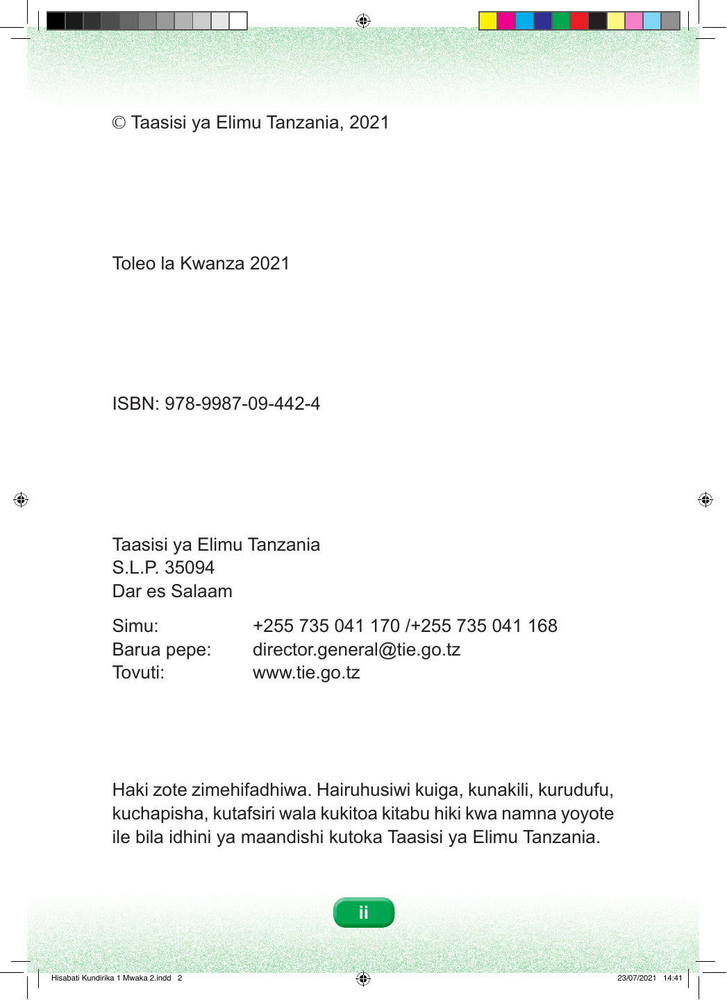

© Taasisi ya Elimu Tanzania, 2021 Toleo la Kwanza 2021 ISBN: 978-9987-09-442-4 Taasisi ya Elimu Tanzania S.L.P. 35094 Dar es Salaam Simu: +255 735 041 170 /+255 735 041 168 Barua pepe: director.general@tie.go.tz Tovuti: www.tie.go.tz Haki zote zimehifadhiwa. Hairuhusiwi kuiga, kunakili, kurudufu, kuchapisha, kutafsiri wala kukitoa kitabu hiki kwa namna yoyote ile bila idhini ya maandishi kutoka Taasisi ya Elimu Tanzania. ii Hisabati Kundirika 1 Mwaka 2.indd 2 23/07/2021 14:41